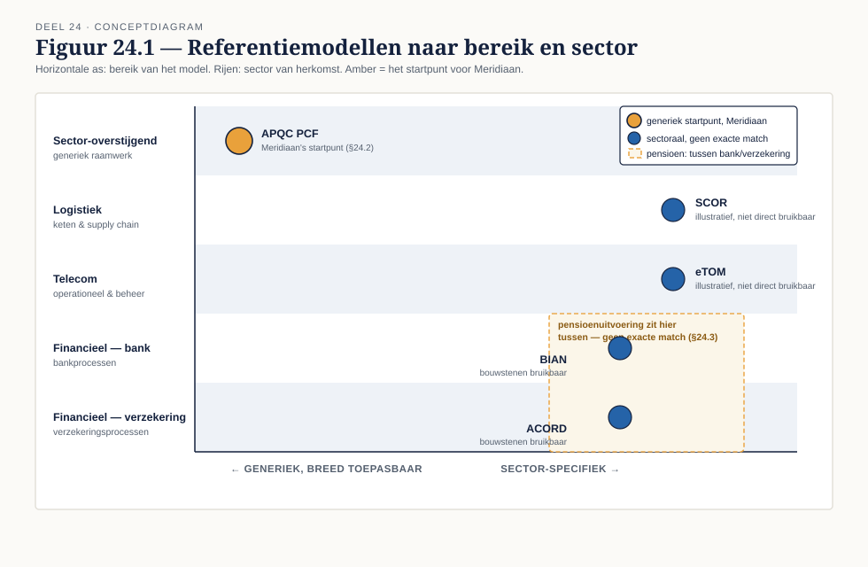

Deel 24 — Referentiemodellen en sectorstandaarden
Slidedeck · Ductus-cursus BPMN, CMMN & DMN · niveau 3 · deel 24 van 30 · 19 slides
Slide 1 — Titelslide
Referentiemodellen en sectorstandaarden — Deel 24
Beeldmerk, cursustitel
Spreeknotitie: Na het zware deel 23, een lichter deel — een andere denkstijl.
Slide 2 — Leerdoelen
Na dit deel kun je…
Vier leerdoelen uit de reader
Spreeknotitie: Kort.
Slide 3 — Wat een referentiemodel wel en niet oplost
Startpunt en gedeelde taal — geen kant-en-klare architectuur

Figuur 24.1, leeg
Spreeknotitie: De valkuil: adoptie zonder tailoring.
Slide 4 — De generieke modellen
APQC PCF · SCOR · eTOM
Drie logo's/namen met herkomstsector
Spreeknotitie: Elk bruikbaar buiten de eigen sector, APQC PCF het breedst.
Slide 5 — Opdracht 1
Match het model — vijf situaties
Werkboekverwijzing, timer 20 minuten
Spreeknotitie: Individueel.
Slide 6 — Financiële sector
BIAN en ACORD
Twee kolommen: bank, verzekering — pensioen ertussenin
Spreeknotitie: Herkenbaarheid boven een generiek model.
Slide 7 — Nederlandse ketenstandaarden
Smaller bereik, dwingender binnen dat bereik
Ketenschema Meridiaan – werkgevers – andere uitvoerders
Spreeknotitie: Vaststellen wie leidend is, is zelf een activiteit.
Slide 8 — Tailoren: drie manieren om het mis te doen
Te veel · te weinig · ongedocumenteerd
 Figuur 24.2, leeg
Figuur 24.2, leeg
Spreeknotitie: De derde is de gevaarlijkste en de meest voorkomende.
Slide 9 — Opdracht 2
Tailoring-analyse — functioneel of historisch gegroeid?
Werkboekverwijzing, timer 30 minuten
Spreeknotitie: Individueel. Het scherpste onderdeel van dit deel.
Slide 10 — Het gesprek met het afdelingshoofd
Hoe breng je dat onderscheid boven tafel?
—
Spreeknotitie: De vaardigheid zit in het gesprek, niet alleen in de analyse.
Slide 11 — Opdracht 3
Welke ketenstandaard is leidend? — de deliverable
Werkboekverwijzing, timer 25 minuten
Spreeknotitie: Individueel.
Slide 12 — Een eigen referentiearchitectuur
Bouwstenen van het hybride referentiemodel naar ondernemingsniveau
 Figuur 24.4, met deel 18 §18.5 als vertrekpunt
Figuur 24.4, met deel 18 §18.5 als vertrekpunt
Spreeknotitie: Onderhouden of veroudert net zo snel als een externe standaard.
Slide 13 — Hergebruik meten
Welk deel van nieuwe modellen komt uit de bibliotheek?
 Figuur 24.5, leeg
Figuur 24.5, leeg
Spreeknotitie: Zonder meting is een bibliotheek ontwerpwerk zonder aantoonbaar rendement.
Slide 14 — Opdracht 4
Ontwerp de referentiearchitectuur — de kerndeliverable
Werkboekverwijzing, timer 30 minuten (loopt door)
Spreeknotitie: Individueel, start nu.
Slide 15 — Opdracht 5
Drie hergebruikindicatoren — en hoe ze te manipuleren zijn
Werkboekverwijzing, timer 15 minuten
Spreeknotitie: Tweetallen.
Slide 16 — Elke indicator lokt gedrag uit
Ook een hergebruikindicator kan gespeeld worden
Voorbeeld: triviale wijziging om als "nieuw" te tellen
Spreeknotitie: Vooruitblik naar de meetdiscussie in deel 28.
Slide 17 — Opdracht 6
Stellingen
Vier stellingen uit het werkboek
Spreeknotitie: Plenair.
Slide 18 — Terugblik
Van vijf situaties tot een eigen referentiearchitectuur
—
Spreeknotitie: Kort.
Slide 19 — Vooruitblik
Deel 25 — Procesmining verdiept
Aankondiging: opfrisblok voor wie deel 20 niet volgde
Spreeknotitie: De referentiearchitectuur van vandaag is het model waartegen mining-bevindingen worden getoetst.